Introdução ao Scratch
Nestas aulas você aprenderá
Introdução ao Scratch
Parte 1
Conceitos Básicos
O que é Scratch
- Scratch é uma linguagem de programação visual desenvolvida pelo MIT.
- Seus objetivos são:
- Ser uma linguagem visual com uso de blocos gráficos
- Tornar o aprendizado de programação mais fácil
- Tornar o aprendizado mais divertido e interessante
Podemos usar o Scratch em diversas tarefas, como criar:
- Seu próprio jogo
- Uma história animada
- Um tutorial
- Uma simulação científica
Vamos começar!
Acesso ou download
Primeiro movimento no Scratch
- Vamos fazer o Gato (sprite) se movimentar na tela (palco ou stage)
- Na categoria Movimento: arraste o botão 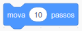 para a área de comandos (scripts)
- Mantenha o valor 10 no comando Mova
- Teste clicando duas vezes sobre o comando
- Teste com outros valores no comando Mova

Palco (Stage)
- O palco/tela (stage) é o local onde os personagens (sprites) se movimentam
- Este palco é como um plano cartesiano com coordenadas x, y
- Tem 480 pontos no eixo X e 360 no eixo Y

Exercício
- Arraste o Gato pela área do palco e observe a posição X e Y indicada abaixo
Lista de Sprites (Sprite List)
- Exibe os nomes e as miniaturas (thumbnails) dos personagens (sprites)
Conjunto de blocos
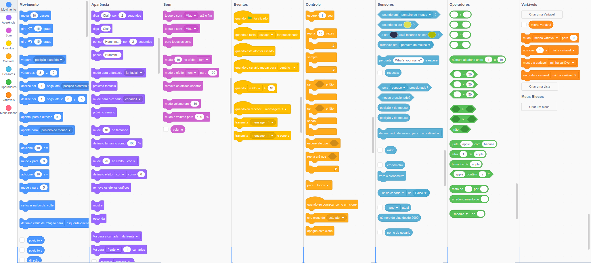Mãos a massa
- Vá no projeto Esconde-Esconde: http://scratch.mit.edu/projects/24155933
- Selecione "Ver interior"
- Analise o código e o jogo, focando nas coordenadas
Rotação

Exercícios práticos
- Abra um Novo arquivo
- Na categoria Movimento, adicione ao roteiro o comando com o valor 100
- Na categoria Eventos, adicione o comando 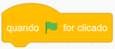 acima do primeiro comando
- Clique na bandeira verde para testar
- Na categoria Aparência, adicione o comando 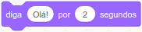 ao roteiro
- Na categoria Movimento, use o comando 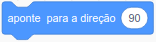 com o valor -90
- Para corrigir o problema do ator ficar de cabeça para baixo, use o comando

- Use mais um comando
- Coloque mais uma fala, agora com a mensagem "Voltei!"
- Em Movimento, coloque o comando
- Adicione o comando 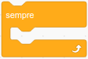 em volta dos comandos para que fique em loop infinito
Resposta do exercício anterior

Animação
- Quando criamos um novo projeto o único ator (sprite) é o do Gato, mas podemos usar outro
- Escolha um novo ator, use o Anina Hip-Hop
- Delete o Gato da lista de atores
- Faça uma animação com o ator usando o comando 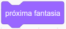
- Coloque um comando
 para que as
fantasias não mudem muito rápido
para que as
fantasias não mudem muito rápido
Resposta do exercício anterior

Introdução ao Scratch
Parte 2
Interação com o Usuário e Colisão
Vamos aprender sobre interação com usuário e a colidir
Bola seguindo o mouse
- Faça a bola seguir o cursor do mouse infinitamente
- Use o comando 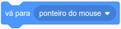 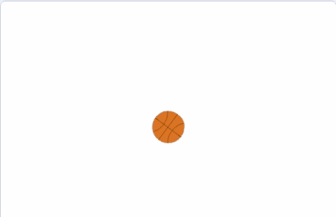
Mirando com o mouse
- Mude o ator para o Magic Ward
- Vá na aba Fantasias e apague os raios amarelos
- Use o comando 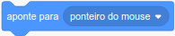 para que ele aponte para o mouse sempre
- Use o comando para que sempre aponte
- Na categoria Movimento, marque os botões Posição x, Posição Y e Direção 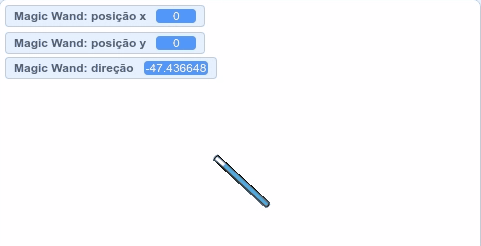
Colisão de uma bola
- Faça a bola se movimentar em uma direção
- Faça a bola voltar caso colida com a borda
- Use o comando 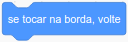
Colisão de uma bola
- Adicione um ator em um ponto que a bola colida com ele
- Caso a bola colida com o Ator ela deve voltar
- Use os comandos 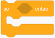 e
- Salve o arquivo para enviar ao professor 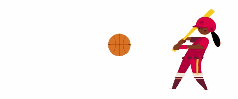
Apontar para o lado da tecla pressionada
- Configure as setas do teclado para movimentar o gato (Gato 2) se virar para o lado da seta pressionada
- Use um comando 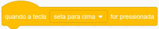 para cada tecla 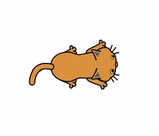
Colhendo maça
- Crie o jogo da colheita de maça
- Use um sprite como o Bowl e a maça, Apple
- Faça a maça cair aleatóriamente
- Faça a tigela (Bowl) movimentar junto com o mouse
- Salve o arquivo para enviar ao professor
- Desafio: Adicione pontuação 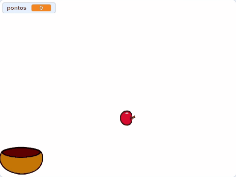
Introdução ao Scratch
Parte 3
Lógica de Programação
Vamos aprender lógica de programação em Scratch
Variáveis
Região de memória que armazena algum valor
- Texto
- Número
- etc
Podemos criar variáveis usando a categoria Variáveis
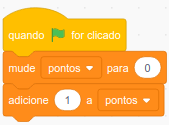
Operadores Lógicos
- Os valores existentes no Scratch bem como as variáveis criadas podem ser comparadas com outros valores
- A comparação é feita nos comandos condicionais, como o
- Ex.: Comparar se a posição do ator chegou no centro do palco, posição x == 0 e y == 0
- Existem três operadores no Scratch: Menor (<), Igual (=) ou Maior (>)
- Ex.: 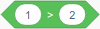 resulta em falso
- Ex.: resulta em verdadeiro
- Ex.: resulta em falso
- Ex.: 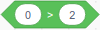 resulta em falso
- Para usar basta acessar a categoria Operadores
Operadores Relacionais
- Outra forma de comparação pode ser feita com os operadores relacionais
- Ex.: Tenho um computador e um celular
- A frase acima significa que tenhos os dois aparelhos
- Ex.: Tenho um computador ou um celular
- A frase acima significa que possuo apenas um dos aparelhos
- Ex.: Não tenho um celular
- A frase acima significa que não possuo celular
- No Scracth, temos três operadores relacionais:
- Estes operadores podem ser acessados na categoria Operadores
Condicionais
Comando SE
- Para criação de jogos e animações, é importante saber usar as condições
- Vamos fazer uma bola bater na cabeça do Gato e aumentar a pontuação em 1 a cada batida
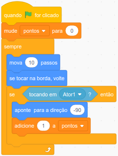
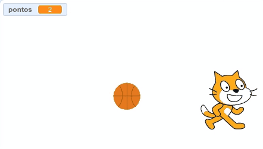
Comando SE e SENÃO
- Vamos fazer uma bola seguir o cursor do mouse e quando chegar no Gol, o ator (bola) deve dizer Gol!!
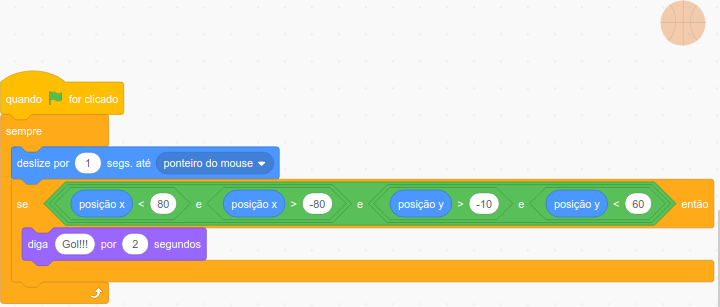

Repetição
Sempre
- Vamos criar um ator (drum) que é tocado o tempo todo e espere por 0.2 segundos
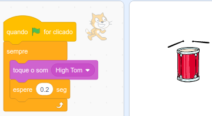
Sempre SE
- Vamos fazer um ator tocar no tambor sempre que apertar a tecla espaço
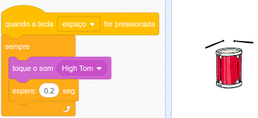
Repita
- Vamos fazer um ator contar números até 10
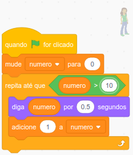
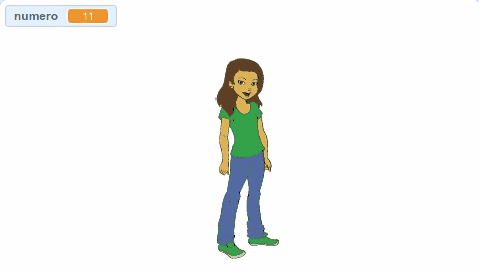
Repita até
- Vamos fazer um ator contar números até que a tecla Espaço seja pressionada
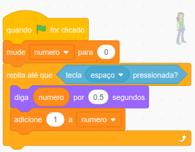
Outros comandos
Verifique outros comandos nas categorias abaixo:
- Controle
- Movimento
- Operadores
- Sensores
Jogo com cenário, condições e variável
Ping pong
- Crie um jogo de ping-pong
- Crie uma raquete que será um retangulo
- Crie uma bola
- Crie uma linha que será o piso que ocupará todo eixo x
- Salve o arquivo para enviar ao professor
- Se der tempo, implemente pontuação ao jogo 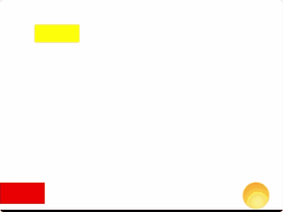
Introdução ao Scratch
Parte 4
Desenvolvimento do Flappy Bird
Vamos montar o jogo Flappy Bird
Esta atividade valerá 5 pontos se concluída com sucesso
- Baixe os arquivos para o tutorial abaixo Artes e Sons do Jogo Flappy Bird
- Execute o seguinte tutorial Flappy Bird - Tutorial do jogo
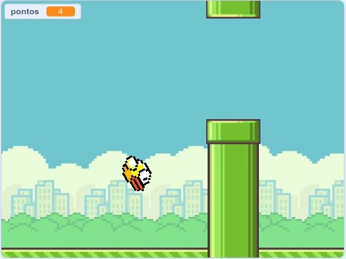
Trabalho Prático 01 - (15 pontos)
Criar um jogo em Scratch
- O tema é livre
- Darei maior pontuação se for interessante ou tiver relação com alguma disciplina do curso ou se tiver relação com ensino de alguma coisa (qualquer coisa!)
- Não pode ser um projeto pronto retirado de algum site na internet
- Deve ser inteiramente feito pelo aluno. SIM! É individual.
- As imagens e sons utilizados podem ser obtidos da internet
- A entrega deve ser feita por e-mail até o dia 08/09/2019
- No e-mail deve haver ao menos dois arquivos: a documentação do jogo e o arquivo do jogo em SB3
- Modelo de Documentação de jogo
- Lembra da Documentação do Jogo Flappy Bird? Use-a como modelo!
Referências
- Scratch Brasil. Scratch Brasil. Disponível em: <http://www.scratchbrasil.net.br>. Acesso em: 01 de agosto de 2019.
- Projeto XO Unicamp. Tutorial Scratch - Conceitos básicos. Disponível em: <http://www.scratchbrasil.net.br/index.php/materiais/tutoriais.html>. Acesso em: 01 de agosto de 2019.
- Professor Wesley Henrique Maciel. Slides de aulas de Scratch. IF Sudeste MG Santos Dumont.
- MARJI, Majed. Aprenda a programar com Scratch: uma introdução visual à programação com jogos, arte, ciência e matemática. Novatec Editora, 2014.